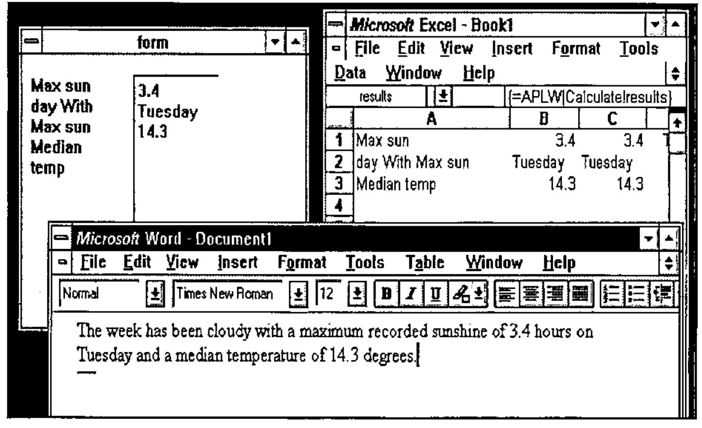

DDE Workshop Notes
Vector 12:2, page 50
Transcribed from the printed issue; not yet reviewed. Read it in the PDF of the issue, page 50
In this article I will not cover all of the material from the July talk but will concentrate on those areas that have not already been covered in Vector articles. I will explain some of the terms used in talking about DDE and how they relate to the implementation of DDE in Dyalog APL/W and APL*Plus III. All of the previous Vector articles on this subject have covered DDE from and to Dyalog APL/W and so I will concentrate on DDE from the point of view of APL*Plus III. The examples that I use will be from the July talk, but updated where appropriate to use Excel 5 or above. I will show two APL workspaces sharing a "common" edit field, an APL workspace sharing data with an Excel spreadsheet and finally a small application in which a Word document can contain fields linked to live data in APL via an intermediate Excel spreadsheet.
Some Terms Explained¶
DDE was designed to allow applications to share their data and so the terms used in DDE are really just a common way of specifying what data one application wants to share with another. The three main elements of this specification are "Application", "Topic" and "Item".
- Application. This is the name of a Windows application. In general it is the name of the .EXE file used to start the application, although there are exceptions.
- Topic. In document-centred applications this is generally the name of the document from which the data is to be taken. In the case of Dyalog APL/W it is the name of the workspace, in the case of APL*Plus it is the name of a form.
- Item. This specifies precisely what data is required. In Dyalog APL/W it is the name of a variable and in APL*Plus III it is the name of a label or edit field on a form. In Excel it is a cell range specification or a defined range name and in Word it is a bookmark defining a vector of text.
Differences in Approach¶
In the meanings attached by the different interpreters to the DDE terms we see the main difference of approach. In Dyalog APL/W it is the variables of the workspace that are linked with other applications. In APL*Plus III it is the text elements of the GUI that the APL application has built that are linked. The means by which the interpreter notifies the application of changes to the watched data is also different. In Dyalog APL/W when a linked variable changes as a result of activity in another application then a DDE event occurs on the root object. This message does not specify which variable has changed whereas in APL*Plus III each individual GUI element that changes will receive a "Changed" event which can result in the execution of code in the normal manner. This is more specific and with more than one element linked this distinction is important.
In the shared variable paradigm with which many APLers will be familiar, the processes on each side of the share are considered equal. This is not the case with DDE. The process requesting the share is considered the "Client" and the process that accepts the share and thus provides the data is considered the "Server".
Setting Up a DDE Client¶
In APL*Plus III you link either a label or an edit field as the client of another application. Both the edit field and the label have specific properties where you can specify the application, topic and item of the data you wish to link.
If the label is called "form1.label1" then:
'form1.label1'⎕wi'ddeApplication' 'Excel'
'form1.label1'⎕wi'ddeTopic' '[book1]sheet1'
'form1.label1'⎕wi'ddeItem' 'R1C4:R3C4'
will define it as linked to a three-cell selection D1:D3 in sheet1 of book1 in Excel.
There are two ways in which the link can be made. If the link is "cold" then the client application is not told of changes to the data with which it is linked. It must request the data. If the link is "hot" then the server application should notify the client application whenever the data changes. Some applications, notably Excel, are a little over-zealous in the notification; if any cell in a sheet changes then applications linked to any of the cells in that sheet are notified, even if the linked cells have not changed at all. This problem will crop up later.
The following line defines the link as cold.
It is at this point that APL*Plus III actually tries to initiate the link. Only now will you find out whether the names specified for the application, topic and item are correct. If not APL will generate an error:
Finally we must request from Excel the data for the label. The DdeRequest method on the label does this and returns its success or failure:
Setting Up a DDE Server¶
If APL*Plus is the server, then the topic and item requested of it must specify a label or edit field. Thus the topic identifies the form and the item identifies the label or edit field. However they are not the names of the form and label. The names by which they are identified are given in the "ddeTopic" property of the form and the "ddeItem" property of the label or edit.
will set "form2" up as a DDE server. APL will at this point register itself with Windows as a DDE server.
will give "edit1" the DDE item name "ItemString". Now in a cell in Excel if you were to type
the contents of the edit field would be copied into the cell, and any further changes to the edit field would be reflected in the cell. In Word the corresponding mechanism for inserting a DDE link is the DDEAUTO field. It takes as parameters the application, topic and server separated by spaces. It is again a hot link and will update automatically. Unfortunately Microsoft have removed DDEAUTO from the "Insert Field" dialogue box and so you have to insert the field manually.
An Example Application¶
At the BAA talk a small application was shown which demonstrates some of the possibilities for systems interacting via DDE. It was a combination of a Word template, an Excel spreadsheet and an APL workspace. The user would insert fields into a Word document that would be linked to data in the APL workspace. Associated with each expression would be a "natural language" APL expression that would evaluate to a statistic. The field could be moved around the document and formatted in any way desired. Furthermore if the data underlying the statistic changed then the field would be updated.
The Excel Spreadsheet¶
This is at the heart of the system and consists of three columns and one extra cell.
In the first column are the expressions to execute, in the second are the results and the third column displays the values in either the first or the second column depending on the value of the single cell which is Boolean (TRUE/FALSE). It is this third column to which the fields in the Word document are linked and this allows a facility in the document to display either the expressions or the results of them. A macro within the Word template sets the value of the single cell to TRUE in order to see the results and to FALSE to see the expressions. A name is defined for the range of the first column and one also for the second. This allows the APL system which is linked to the columns to manage without knowing how many expressions have been entered.
The APL System¶
The APL system consists of a form on which are a label and an edit field. The label is "hot-linked" as client to the expression column of the spreadsheet and the edit field is offered as a server item to which the second column of the spreadsheet is linked as described above. The following function sets up the form.
SetUp
⍝ Set up the server form to calculate the results of the expressions in an
⍝ Excel spreadsheet and to place them in a field accessible by Excel
⍝ Initialise the record of the previous contents of the expression cells
olddata←''
⍝ Reset the GUI
'#'⎕wi'Reset'
⍝ Create the form
⎕wself←'form'⎕wi'New' 'Form' ('where' 1 1 15 30)
⍝ Set its DDE topic. At this point APLW declares to Windows that it is a DDE
⍝ server.
⎕wi 'ddeTopic' 'Calculate'
⍝ Create a multi-line edit field and give it the DDE item name "results"
⎕wself←⎕wi ':res.New' 'Edit' ('style' 4)('where' 1 13 11 10)
⎕wi 'ddeItem' 'results'
⍝ Create a label and link it to the "expressions" range in the spreadsheet
⍝ "[book1]sheet1"
⎕wself←⎕wi ':expr.New' 'Label' ('where' 1 1 11 10)
⎕wi 'ddeApplication' 'excel'
⎕wi 'ddeTopic' '[book1]sheet1'
⎕wi 'ddeItem' 'expressions'
⍝ Make the link "hot" so that a change in excel will automatically reflect
⍝ in the label
⎕wi 'ddeMode' 'hot'
⍝ Set it to run the function "UpdateResults" whenever it changes
⎕wi 'onChange' 'UpdateResults'
⍝ Request Excel that it provide the data to populate the label
⎕wi 'DdeRequest'
When the label changes (as a result of a new expression being entered or an existing expression amended) then the UpdateResults is run. This calculates the results of the expressions, formats them and places them in the edit field.
UpdateResults;newdata
⍝ Calculate the results of the expressions in the caption of ⎕wself
⍝ and place them in the field "res" of the same form.
⍝ Called on a change to the label "expr"
⍝ Get the expressions
newdata←⎕wi'caption'
⍝ Excel sometimes notifies a change when none has occured so we must check
:if ~newdata≡olddata
olddata←newdata
⍝ Convert the newline delimited text vector to nested form
newdata←1↓¨(1,⎕tcnl=newdata)⎕penclose ' ',newdata
⍝ Execute each subvector and place the concatenation of the results
⍝ in the result field "res"
⎕wi ':res.text' (1↓∊⎕tcnl,¨⍕¨⍎¨newdata)
:endif
The only complication is the check to see that the data has in fact changed. Excel, as described above, notifies a change to all cells when any cell is changed; when we change the edit field and thereby the results column of the spreadsheet we are notified of a change in the expressions, causing us to update the edit field again …
The functionality of the system is provided by functions and variables in the workspace so that a flexible query language is implemented.
The Word Template¶
This contains the macros that manage the contents of the expressions column in the spreadsheet and make sure that the names defined there cover the full range of expressions. There is also a macro to change between "result" and "expression" view by (again using DDE) poking a Boolean value into the cell D1.
The system is shown in action below. The APL form is shown in the top left corner but obviously it would normally be hidden, preventing the user from knowing that he was using APL at all.

The Future¶
As you can see from Microsoft’s reluctance to document the DDE hooks in their applications, DDE is on the way out. It has been replaced by OLE, Object Linking and Embedding, which provides much greater capabilities, but which has some strange ideas underlying it. The embedding aspect of OLE is about a document from one application being embedded within a document from another. It is not clear to me what relevance this has to the majority of APL systems.
Central to Microsoft’s thinking seems to be that users work primarily with documents, and this has influenced the interface to a great extent. It ignores the task-orientated nature of a great deal of client/server computing. How the Windows APL interpreters implement OLE will determine whether we are funnelled down this route or can use OLE to link applications in innovative ways undreamed of by Microsoft.